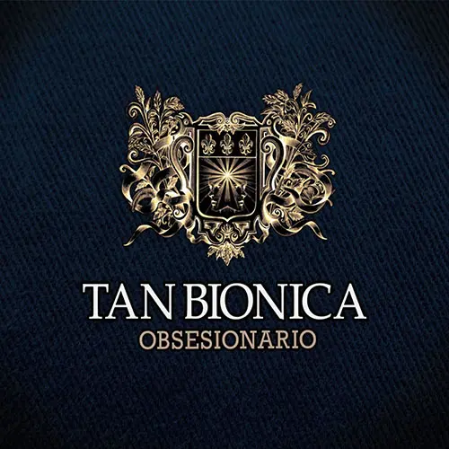

A partir de esta novela desarrollé el código de una aventura gráfica en la cual hay finales alternativos y también un minijuego inspirado también en la misma.
El amor en los tiempos del cólera es una novela del escritor colombiano Gabriel García Márquez, publicada en 1985. Es una novela dedicada al verdadero amor que perdura y supera las adversidades toda una vida. Es un homenaje al amor, las aventuras, el tiempo, la vejez y la muerte.
A pesar de que estaba la oportunidad de hacerlo en equipo, me pareció interesante animarme a hacerlo sola
Del proceso de trabajo solo puedo decir que costo pero se puedo, este año entre a la carrera sin idea de lo que era la programacion, pero me siento orgullosa de mis producciones y avances.
Un dato muy gracioso es que en todos mis trabajos siempre escondia y de forma disimulaba incorporaba algo sobre Tan Biónica, por eso cuando pudimos elegir las novelas me lei las 100 opciones de titulos de novelas y no me interesaba mucho ninguno, hasta que vi "El amor en los tiempos del cólera" y pocos saben pero la cancion "perdida" de Tan biónica esta inspirada en esta novela y relata perfectamente la historia (a continuacion la cancion).
"confundio el amor con los efectos duraderos de la peste"
